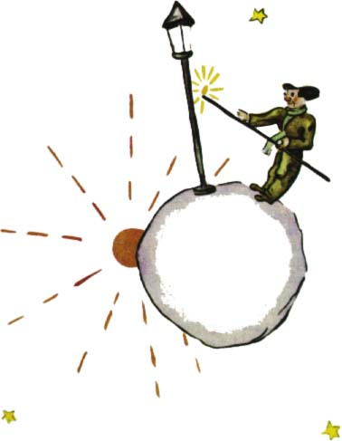

Pøesto si v duchu øekl:
Mo¾ná je ten èlovìk zbyteèný. A pøece je ménì zbyteèný ne¾ král, ne¾ domý¹livec, ne¾ byznysmen a ne¾ pijan. Jeho práce má alespoò smysl. Kdy¾ rozsvítí svítilnu, jako by se zrodilo o hvìzdu nebo o kvìtinu víc. Kdy¾ zhasne kvìtinu, jako by kvìtina nebo hvìzda ¹ly spát. Je to moc hezké zamìstnání. A opravdu u¾iteèné, proto¾e je hezké.
Kdy¾ pøi¹el na planetu, pozdravil uctivì lampáøe:
"Dobrý den. Proè jsi právì zhasl svítilnu?"
"To je pøíkaz," odpovìdìl lampáø. "Dobrý den."
"Co to znamená pøíkaz?"
"No, to znamená, ¾e musím zhasnout svítilnu. Dobrý veèer."
A zase ji rozsvítil.
"Ale proè jsi ji právì roz¾al?"
"To je pøíkaz," odpovìdìl lampáø.
"Nerozumím," odvìtil malý princ.
"Není èemu rozumìt," øekl lampáø. "Pøíkaz je pøíkaz. Dobrý den."
A zhasl svítilnu.
Potom si otøel èelo èervenì kostkovaným kapesníkem.
"Je to hrozné zamìstnání. Kdysi to vyhovovalo. Zhá¹el jsem ráno a roz¾ínal veèer. Zbývající èást dne jsem si mohl odpoèinout a zbytek noci spát..."
"A od té doby se pøíkaz zmìnil?"
"Pøíkaz se nezmìnil," øekl lampáø. "To je právì to stra¹né! Planeta se rok od roku toèila rychleji, a pøíkaz se nezmìnil!"
"No a?" divil se malý princ.
"No a teï se otoèí jednou za minutu a já nemám ani vteøinku klidu. Rozsvìcuji a zhá¹ím jednou za minutu."
"To je divné! Dny u tebe trvají minutu!"
"To není vùbec divné," øekl lampáø. "U¾ je tomu mìsíc, co spolu hovoøíme."
"Mìsíc?"
"Ano. Tøicet minut. Tøicet dní. Dobrý veèer."
A zase rozsvítil svou svítilnu.
Malý princ ho pozoroval a zamiloval si toho lampáøe, který byl tolik vìrný pøíkazu. Vzpomnìl si na západy slunce, které kdysi pozoroval tak, ¾e posunoval ¾idli. Chtìl svému pøíteli pomoci:
"Ví¹... já znám prostøedek, jak si mù¾e¹ odpoèinout, kdy¾ bude¹ chtít."
"Samozøejmì ¾e chci," øekl lampáø.
V¾dy» èlovìk mù¾e být vìrný pøíkazu a pøitom tro¹ku pohodlný.
Malý princ pokraèoval:
"Tvá planeta je tak malá, ¾e ji obejde¹ tøemi kroky. Staèí, kdy¾ pùjde¹ dost pomalu, abys zùstával stále na slunci. Kdy¾ si bude¹ chtít odpoèinout, pùjde¹... a den bude trvat tak dlouho, jak bude¹ chtít."
"To mi moc nepomù¾e," øekl lampáø. "Já rád spím."
"To je smùla," øekl lampáø. "Dobrý den."
A zhasl svítilnu.
Tímto èlovìkem by v¹ichni pohrdali, král, domý¹livec, pijan a byznysmen, øekl si malý princ a ¹el dál svou cestou. A pøece on jediný mi nepøipadá smì¹ný. Snad proto, ¾e se zabývá nìèím jiným ne¾ sám sebou.
Lítostivì si povzdechl a øekl si je¹tì:
Je to jediný èlovìk, s kterým bych se mohl spøátelit. Ale jeho planeta je opravdu moc malá. Není tam místo pro dva...
Malý princ se v¹ak neodva¾oval pøiznat si, ¾e litoval této ne¹»astné planety zvlá¹tì pro tìch tisíc ètyøi sta ètyøicet západù slunce za dvacet ètyøi hodiny!